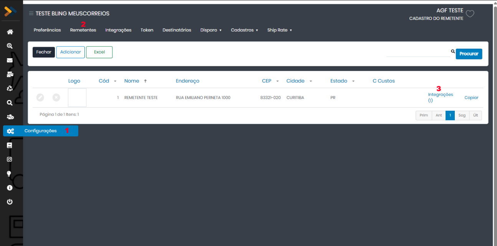
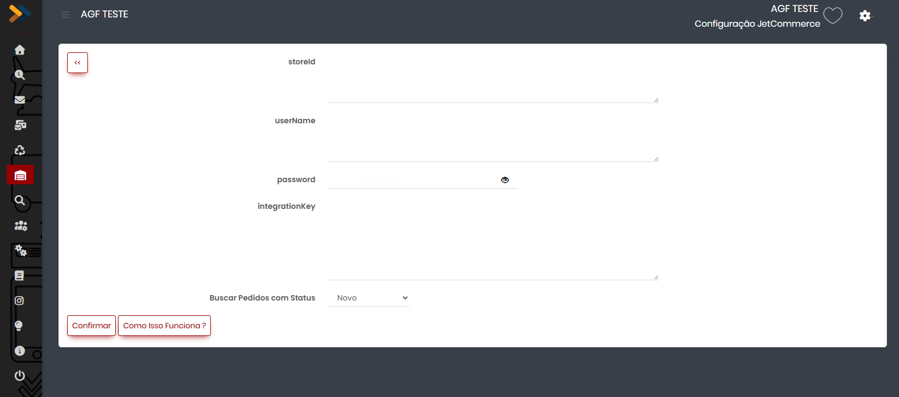
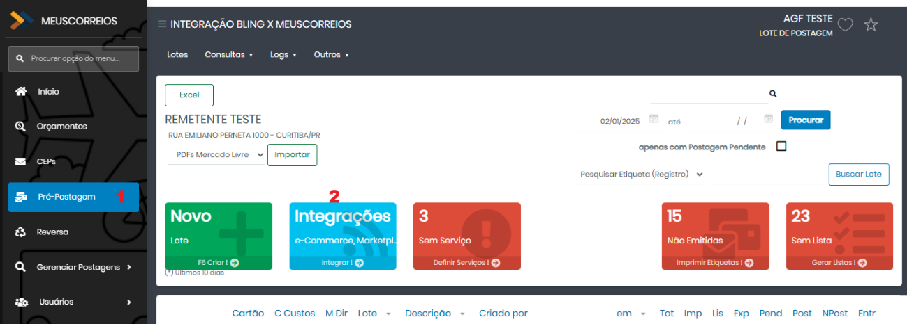
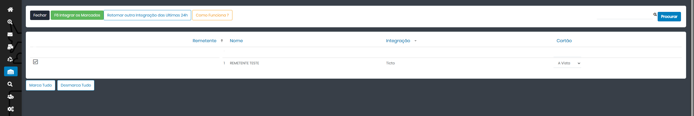
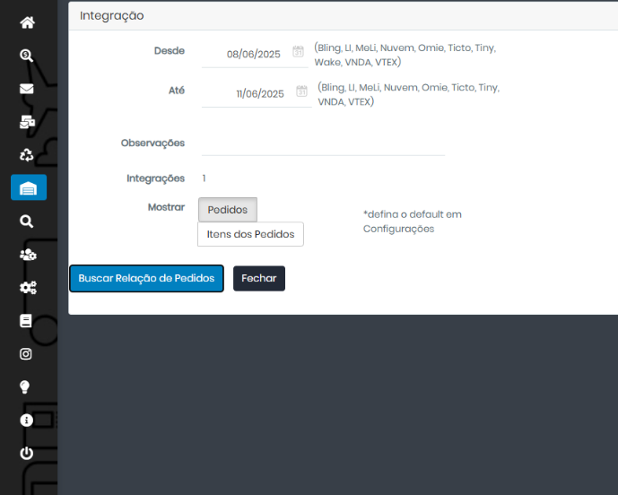
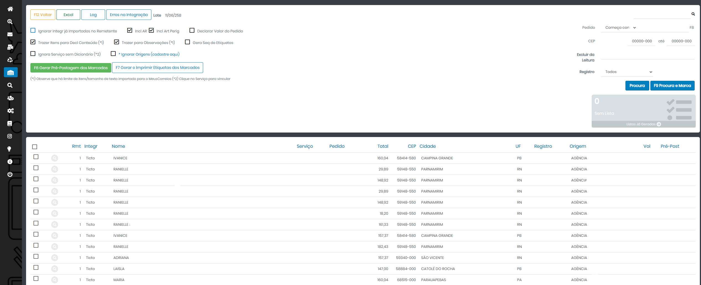
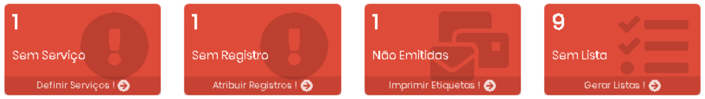

1. Visão geral
A integração permite que o MeusCorreios consulte pedidos da JetCommerce e crie pré-postagens a partir dos dados importados.
Antes de começar
- Tenha acesso administrativo ao painel JetCommerce.
- Tenha acesso ao usuário do MeusCorreios que configura remetentes e integrações.
- Defina qual remetente do MeusCorreios será usado para essa integração.
- Confirme com o lojista qual status de pedido deve ser buscado na JetCommerce.
Dados necessários
Ao final da configuração no JetCommerce, você precisará preencher estes campos no MeusCorreios:
storeIdouID LojauserNameouUsuário APIpasswordouSenha APIintegrationKey
2. Gerar as credenciais da API no JetCommerce
Primeiro, gere as credenciais de acesso à API dentro do painel administrativo da JetCommerce. Essas credenciais serão copiadas depois para a tela de integração do MeusCorreios.
- Acesse o ambiente administrativo da JetCommerce com um usuário que tenha permissão para gerenciar integrações.
- No menu lateral, entre em Configurações e depois em Gerenciar credenciais de integração.
- Clique em Nova Credencial ou Gerar Nova Credencial.
- Preencha o formulário da nova credencial/parceiro. Use uma identificação clara, por exemplo: MeusCorreios. Em seguida, clique em Salvar.
- Após a mensagem de criação da credencial, clique em Ver credenciais.
- Na tela de detalhes da credencial, copie e guarde com segurança o ID Loja / StoreID e a IntegrationKey.
- Ative as filas necessárias para a integração: Pedido e Produto/Sku.
- Se a tela apresentar a opção Json autorização nas filas, clique em Visualizar para copiar os valores de UserName e Password. Quando houver credenciais separadas por fila, utilize principalmente as credenciais da fila Pedido para busca de pedidos. Caso o ambiente gere apenas um conjunto único, utilize esse conjunto no MeusCorreios.
Resumo do que copiar
| Dado no JetCommerce | Campo correspondente no MeusCorreios | Observação |
|---|---|---|
| ID Loja ou StoreID | storeId | Identifica a loja JetCommerce. |
| UserName | userName | Usuário gerado para a API/integração. |
| Password | password | Senha gerada para a API/integração. |
| IntegrationKey | integrationKey | Chave de integração da credencial criada. |
3. Configurar a integração no MeusCorreios
Com as credenciais da JetCommerce em mãos, acesse o MeusCorreios e vincule a integração ao remetente correto.
- No MeusCorreios, entre no menu Configurações.
- Acesse a opção Remetentes.
- No remetente que será usado na integração, clique em Integrações.

- Selecione a opção JetCommerce.
- Preencha os campos
storeId,userName,passwordeintegrationKeycom os dados gerados no JetCommerce. - Em Buscar Pedidos com Status, selecione o status dos pedidos que o MeusCorreios deve consultar na integração.
- Clique em Confirmar para salvar a configuração.

4. Gerar pré-postagens de pedidos JetCommerce
Depois que a integração estiver configurada, os pedidos podem ser importados para o módulo de Pré-Postagem.
- Entre no módulo Pré-Postagem do MeusCorreios.
- Clique no botão Integrações. Também é possível criar um novo lote ou utilizar um lote já existente.

- Selecione a integração JetCommerce.
- Clique em F6 Integrar os Marcados.

- Na janela exibida, informe a data inicial em Desde. Se necessário, preencha também a data final em Até.
- Clique em Buscar Relação de Pedidos.

5. Opções da importação
Após a busca, os pedidos serão exibidos na tela. Antes de gerar a pré-postagem, revise as opções de importação.
Opções principais
- Ignorar pedidos já importados no remetente.
- Incluir ou não AR nas postagens.
- Incluir ou não Artigo perigoso, quando aplicável.
- Declarar ou não o valor do pedido.
- Trazer itens para a declaração de conteúdo.
- Trazer itens para o campo Observações.
- Gerar sequência de etiquetas.
- Ignorar serviço sem dicionário.
- Ignorar origens, quando houver pedidos vindos de outros marketplaces.
Como marcar pedidos
Marque todos os pedidos que serão postados. Você pode usar o quadrinho do cabeçalho para marcar ou desmarcar todos os pedidos da página.
Ao navegar entre páginas, confira se os itens marcados permanecem selecionados antes de gerar a pré-postagem.
Pedidos que não devem ser postados devem permanecer desmarcados.

Clique em F6 Gerar Pré-Postagem dos Marcados para criar os destinatários dos pedidos e voltar para o lote de postagem do MeusCorreios.
6. Selecionar serviços e definir etiquetas
Depois de importar os pedidos, o MeusCorreios informa o que ainda precisa ser feito por meio dos cards em vermelho na tela de Pré-Postagem ou dentro dos lotes gerados.

Dicionário de Serviços
Se o serviço de postagem já vier definido no pedido da JetCommerce, cadastre os serviços no Dicionário de Serviços para que o MeusCorreios atribua o código corretamente.
Se preferir, deixe que o MeusCorreios defina o serviço na etapa de pré-postagem.
7. Checklist e solução de problemas
Checklist de configuração
- Credencial criada no JetCommerce.
- Filas Pedido e Produto/Sku ativadas.
- StoreID, UserName, Password e IntegrationKey copiados corretamente.
- Integração JetCommerce salva no remetente correto do MeusCorreios.
- Status de busca dos pedidos selecionado.
- Pedidos localizados na tela de integração da Pré-Postagem.
Problemas comuns
| Situação | O que verificar |
|---|---|
| Pedidos não aparecem | Confira o status selecionado, o período informado, se a fila de pedidos está ativa e se há pedidos novos na fila. |
| Erro de credencial | Revise StoreID, UserName, Password e IntegrationKey. Evite espaços antes ou depois dos valores copiados. |
| Pedidos ficam Sem Serviço | Revise o Dicionário de Serviços ou atribua o serviço manualmente no lote. |
| Pedidos ficam Sem Registro | Verifique se existe estoque/range de etiquetas disponível para o serviço utilizado. |
| Pedidos antigos não retornam | Solicite à JetCommerce a carga de pedidos anteriores na fila, quando necessário. |